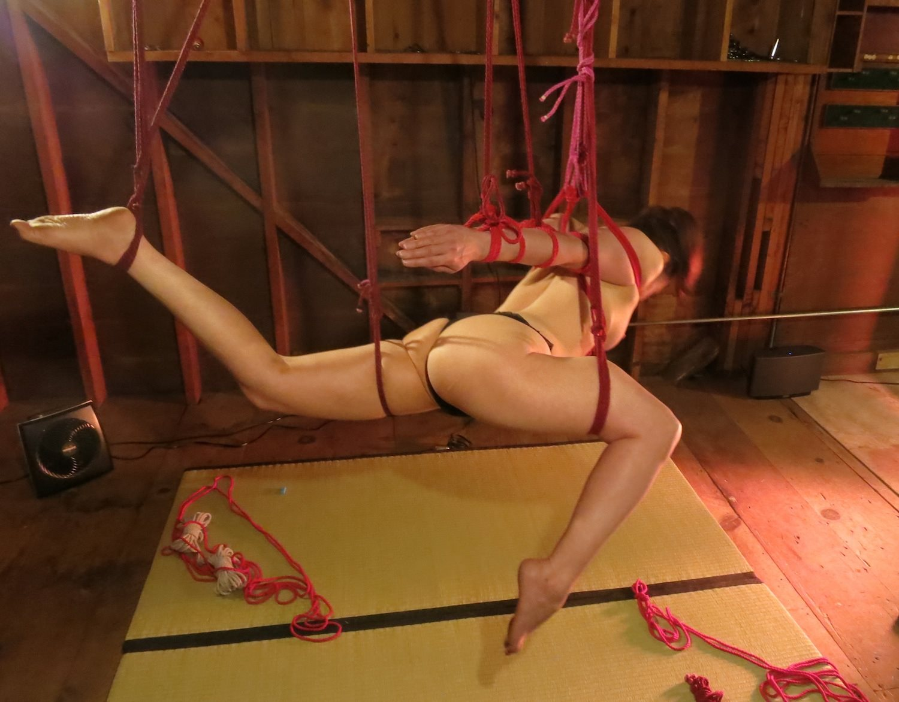

Chapter 10
You’re tied as neatly as can be, with plenty of supportive rope. When your second foot leaves the ground and you settle into place, you feel weightless and heady. Your rope top puts you into a gentle spin, and you extend your arms behind you like a bird’s wings, because you’re flying without a care in the world. You’re the most graceful creature who ever existed, a magical being born of another world. You wish you could stay there forever.
Or how about this?
You try to shift your arms, but there’s little give in the rope, and you’re feeling the constriction and the discomfort. One leg is already off the ground, tied with a mere two wraps on the thigh. You fear but also anticipate the moment your second foot is lifted—can you do it, or will the pain be too much? You breathe deeply, knowing that even if you can handle this position, it will not be the end; your rope top is known for transitions, and you’ll need every ounce of stamina and courage you possess to get through them. By the end of the scene, you’re as high as a kite, a spent heap of jelly limbs, mentally and physically drained but completely satisfied. You feel as accomplished as an Olympic gold medalist.
There are as many kinds of scenes in the air as there are on the ground, from gentle to torturous. There are partial suspensions and full suspensions, ones with lots of rope and ones with very little, ones with just you or with other people. Ones that make you feel adored and ones that make you cry (sometimes both at the same time).
Being off the ground intensifies everything. The pressure of the ropes is greater; placement and tension issues are magnified; the balancing skills required can be greater—both physically and emotionally. You’ll likely be dealing not just with pain but with the added sensation of figuring out your body’s position in space. You may be dealing with nausea or dizziness or a fear of heights.
Now is a good time to point out that partial suspensions are not necessarily easier or safer than full ones. All it can take to turn a partial into a full is lifting a foot off the ground. But even if the entire scene remains a partial, it deserves the same consideration as a full. Don’t think of it as “just” a partial; think of it as the intense and potentially injury-causing rope scene it is and give it the safety consciousness it deserves.
I love floor scenes, but suspensions send me into the stratosphere. The training and skill required on the rigger’s part makes me feel extra special. Add the physical and emotional challenges on my part, and it’s like no other form of rope or even BDSM play.
But there are good challenges, the kind that make you feel accomplished, and then there are safety risks and also mere unpleasantries that can hinder your focus. These tips will help you reduce the latter two so you can get the most out of the scene and increase your chances of coming out unharmed. Speaking of unharmed, guess what it’s time for?
Warning: Suspensions are edge play, an extreme sport. You can experience temporary or permanent injury. You can die. Do not ever let anyone suspend you who is not trained properly and who does not respect your safety.
Also, as much as I hate to repeat myself, some of you might have gone right to this section and skipped the important stuff in the other chapters. So several things are repeated here from earlier.
Eat something but don’t stuff yourself. Make sure you’re hydrated too, but don’t drink so much that you have to pee every 15 minutes. Doing these things alone could greatly reduce your chances of fainting. Also carefully consider your caffeine intake. Some find it gives them more energy; I find that too much makes me tense and less able to settle in.
Use the bathroom right before you get tied up, even if you just went 30 minutes ago.
Stretch. If you know what tie you’ll be doing, focus on the areas that will be affected (shoulders for a box tie or strappado, spinal stretches for backbends, etc.).
Check in with your body. Do you have any injuries, old or recent? Is anything strained or hurting on this particular day? Let your rope top know.
Make sure your clothing won’t unduly restrict your breathing and that you’re in shoes you can stand in for longer than you expect.
Spend at least a few minutes cultivating mindfulness (see Chapter 3).
Have your rope bottoming bag with you (see Chapter 4).
Don’t lock your knees. If you’re required to stand still, keep a slight bend in your legs. This will keep blood flowing and can reduce the risk of fainting. I also raise my heels alternately off the floor when possible to keep my feet from falling asleep.
Don’t shift your weight from hip to hip. You’ll just make each hip sore in turn. Stand in a neutral position (Mountain Pose in yoga, with the feet hip width apart) with your weight evenly distributed, shoulders rolled back and down, and pelvis tucked slightly under. Relaxing your shoulders as opposed to hunching them up will help protect some of your nerves.
You know how porn stars arch their backs and stick out their breasts and booty to look sexier? That’s a speedy route to Achy Town. -Yua- posted a wonderful article on FetLife that includes a description of how to stand in more detail; see Appendix C.
If you’re on the floor, you don’t have to kneel. You can sit cross-legged or with your legs to the side or however is comfortable. You can also ask for a pillow or a blanket to sit on. There’s no sense in your legs falling asleep under you or your being focused on discomfort that serves no purpose in the scene.
Don’t dance. Maybe your favorite song is calling to you, but if you shake your booty or anything else while you’re being tied, you can interfere with proper rope placement and tension. Dance in your head but keep your body focused on the tying. (“Dancing in the rope” also refers to a fun form of dynamic suspension, which is different.)
Breathe deeply. Different people recommend different kinds of breathing, such as breathing mostly into the abdomen or even doing yogic pranayama. If I remember to breathe more than shallowly at all, it’s a win for me. Also, if I know that a rigger tends to tie extra tightly on the chest, I tell them but also breathe even more deeply into the chest while they’re tying to create more room. (Don’t hold your breath, though—keep your chest expanded as you exhale. It takes practice.)
Don’t “help” your rigger. Whether the rope is caught between your toes or your rigger is having trouble pulling rope through a tight spot, fight any temptation to assist. You’ll probably only make the issue worse; plus, you’ll be conveying that you think your rigger can’t handle it on their own. It will also put you in the controlling mind-set that is the opposite of submission.
Keep your focus. Do whatever you can to tune out distractions, such as meditative practices or even just closing your eyes. Tangible aids can help but come with their own cautions. A blindfold can decrease your sense of balance and where your body is in space. A hood can do the same as well as restrict your breathing. Earplugs are not recommended, because you won’t be able to hear your rigger.
Speak up. If something is bothering you now, it will likely bother you much more when you’re in the air. And it’s much easier to adjust a tie on the ground than off. So even if you consider the issue minor—say, the wraps around your chest are slightly too tight—it’s better to tell your rigger now. This is part of trusting your instinct. Every time I’ve thought, “Hm, this is bothering me a bit but maybe it’ll change when we go up,” it became a bigger problem in the air.
Don’t try to tough it out, because your effort will likely be counterproductive. You may have to come down sooner than you’d hoped, whereas if you had spoken up, the issue could’ve been resolved and you could have lasted longer.
Keep the connection going. Realize that your rigger’s focus on the rope is them focusing on you, even if it doesn’t seem like it. Think of the rope as an extension of their touch. Breathe in sync with them. Smell their skin or their hair. Take in their energy. Realize also that connection can be tangible or energetic. The right look from 10 feet away can be just as connective as a hand on your heart.
Make micro-movements. You’re not a statue; in any position you can move your body slightly to change the distribution of the rope pressure without messing up the tie. Point or flex a foot, suck in your abs, arch your back, lift or lower your head. Mere centimeters of adjustment can make a world of difference!
In the photo below, can you spot all the micro-movement possibilities? (Ropework by Peter Slemrian, teaching in a private lesson. Photo by -Mr-D-.)

Just breathe. Breathe anywhere where there’s more room to take a deeper breath. If your chest is bound, as in a takate-kote, breathe into your abdomen or into the part of your chest that’s above the rope. If you’re in a facedown suspension, breathing into the back can help. Breathe through your mouth or your nose. Breathe as noisily as helps you; I tend to exhale with a whooshing noise through my mouth while adjusting to especially challenging ties.
If you’re having difficulty breathing deeply anywhere, take shallow sips of air and try to conserve energy by not moving or speaking unnecessarily. Visualize breathing into the painful parts as well to create more space and good energy there. (It sounds woo-woo, but it works.)
Focusing on the breath—feeling it enter and leave your body, feeling your abdomen or chest rising and falling—can also take your mind off the pain. And if you are really struggling to breathe, of course tell your rigger immediately.
Remember the pain profile. Shifting into a suspended position from the ground or transitioning in the air can cause an initial shocking pain, especially if it’s a jerking lift or a quick drop. Your first instinct may be, “Ack, I can’t do this!” But if you’re not at risk of injury and the tie is just a challenging one, give it a minute or two—sometimes the body will adjust and the pain will ebb all on its own. Learn how pain manifests itself in your body and remind yourself of its profile when you’re in the air.
Don’t panic. Panicking never helps anything, and if you panic and have to be cut out, you’re putting yourself at more risk than if you had been taken down methodically. If you do feel yourself starting to panic, tell your rigger immediately. Breathe as deeply as you can but try not to hyperventilate, and remember that if you need to come out immediately, it’s your right—and you’ll be on the ground soon.
Don’t worry that you look fat, ungraceful, or anything else negative. This is still one of the hardest things for me—I fight back negative thoughts about looks every single time I’m in rope. But I also know that when I’m focusing on looks, I’m not surrendering and not getting the most out of the experience. It’s one thing to consider how to make a position look more graceful—by pointing your toes, say, or arching your back—but it’s entirely another to just worry that you look unattractive.
If it helps, you can look at these negative thoughts as insults to your rigger. They found you special enough to tie and have made you a living work of art—are you going to disrespect their creation by deeming it unattractive? Also, know that anyone watching will be focused much more on your face—the suffering, the passion, the radiance—than on any flab squished by the rope. Trust me.
Actively practice pain processing. See Chapter 9 for some methods.
Consider spinning or swinging. Usually the rigger will do this for you if you’ve agreed on it, but you can also create your own momentum if you’re in the right kind of tie and have your rigger’s blessing. If you’ve never spun or swung around before, I suggest you start slowly; some people get really dizzy or nauseous.
To reduce dizziness, you can try the dancer’s trick of spotting: Focus on a point and then whip your head around to the opposite point as you spin. This has never worked for me. I just keep my eyes closed, which does. If nothing seems to work, try conditioning yourself slowly; some bottoms say they’ve become less dizzy with practice.
Try dancing in the ropes, again with your rigger’s prior knowledge and proper rope setup. Dancing means changing positions on your own; for example, you swing your legs from straight out in front of you to bent behind you. There’s a great video clip of Mademoiselle O on Vimeo doing this, or see it via ShibariCircus.com. (And remember that your own dancing doesn’t have to be as skilled as Mademoiselle O’s to be fun. I’m guessing she practiced hard for that one short scene and that she’s had years of ballet and gymnastics training.)
Move slowly. Even if you feel fine, it can take a while for your body to readjust to being back on the ground and to being back upright if you were horizontal or inverted. It also takes time for circulation to return to normal. And sometimes you can be so rope high that you just don’t notice, say, that you’re about to fall over. Lying down is perfectly appropriate; so is asking your rigger to hold you until you feel steady.
But whatever you do, don’t rush into stretches or run to get your clothes on or whatever. Allow yourself the same presence and mindfulness as you cultivated during the tying and the flying. The untying is still part of the scene.
Don’t let your partner move your body parts back to the untied position. For example, if your arms have just been untied from a box tie, don’t let your partner pull them forward for you. Your rigger is trying to be helpful, of course, but this can be painful. Only you know the pace at which your body parts can move back to their everyday positions, and if you take my advice, that pace will be slow. Just say, “Thanks, but I’d rather do that myself.”
Check in with your body. Do some gentle neck bends and shoulder rolls; wiggle your fingers and toes; flex your hands and feet. Does everything seem to be functioning normally? If not, it’s better to find out sooner rather than later and seek medical attention if necessary.
Drink water. Aside from being restorative physically, drinking water can feel very grounding and centering—it’s a small act that can have a big effect. I drink at least a little water even if I don’t feel thirsty, just for the other effects. Eating a snack can help too, but I suggest saving the big meal for later until your body is fully back to normal.
Wrap up. Even if you don’t feel chilly right away, a cozy sweater or blanket can be very comforting and nurturing right after an intense scene. And your body temperature will likely drop at some point; it’s nicer if you don’t have that naked, freezing-cold, “Now where did I leave my damn shirt?” moment.
Don’t skimp on aftercare or gratitude. Different people have different needs. Honor what is right for you. See Chapter 3 and Chapter 6 for some aftercare ideas for you and your rigger. And remember that good aftercare might help lessen the severity of any sub drop in the hours or days to come.
Deal with sub drop. If you’re one of those lucky people who doesn’t get sub drop, hooray for you! For the rest of us, sub drop is the inevitable down that’s the body’s way of balancing the high. It can range from mere crankiness to downright depression. Even just naming it—realizing what it is and that it will pass—can help. See Chapter 8 for more about sub drop. And remember that any rope top worth playing with will be there for you for a reasonable amount of follow-up care. You deserve it.
Have a support team. Make friends with others in the rope community, both tops and bottoms, and share your experiences. Talking about your time in the rope extends good experiences, puts bad ones into perspective, and fosters connections with like-minded people. On the physical side, I have a massage therapist and a chiropractor on my support team for the aches and tweaks. Who might you add to help support you physically?
Give and get feedback. Feedback, both positive and constructive, helps everyone improve. Be considerate. If I offer anything constructive, I always start with the things I liked first. And realize that most people don’t offer feedback unless asked directly. You can say, “Is there anything you think I can improve on?” Also review the scene on your own. Were there parts where better communication might have helped, for example? More flexibility in the shoulders or lower back? Be honest with yourself while still celebrating the awesome parts.
Build stamina and endurance. Strengthening your core (through crunches, Pilates, leg lifts, etc.) will serve you well in all kinds of suspension scenes. See Chapter 9 for more ways to boost your physical abilities.
Combat ennui. You may one day think, “Rope? Meh, whatever. What’s on Netflix?” Plateaus are perfectly normal and mean you’re actually growing and evolving even though they make you feel stale. Maybe rope no longer really is your thing, but before you quit for good, I urge you to first:
Take a break. Coming back fresh can give you a new perspective.
Tie with a different partner. Even if you want to keep your current one, you can bring new ideas and energy back to them.
Explore new styles—attend performances, watch videos, look at photos. Maybe something will inspire you anew.
Learn rope from the top side. Experiencing rope from the other end can change how you feel about being a bottom, and at the very least it will help you communicate more effectively and feel more empowered in the rope.
Challenge yourself to improve. The more positions you can do, the longer you can last, and the deeper you can go in your scene can all dramatically transform your experience. Really think about what will make your scenes send you into the stratosphere, and then figure out how to get there.
In the end, not even the most experienced rope bottom in the world can tell you what will make a scene great for you or lay out a plan for you to accomplish it. Take the reins in your own hands, tell yourself you can do it, and celebrate the wonderful uniqueness of you, your body, and your rope experience.
~
Happy and safe tying to you! May rope take you to places you never imagined, as it has done for me.
Peace and love,
Evie